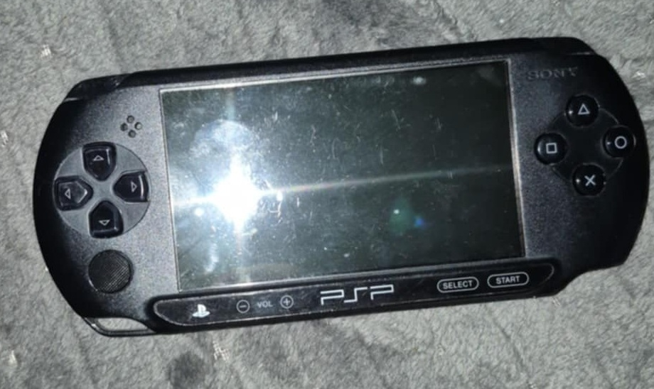
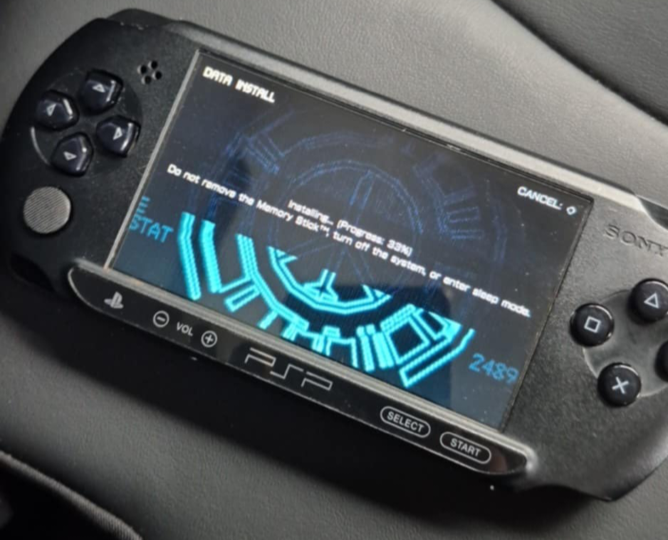

i've recently picked up PSP E1004 from local 2nd hand online store for around 75eur
the screen was scratched a little (picture below)
i've put ARK-4 cfw on it, tutorial ishereand ordered a PSP 1000 glass coverlink
i finally installed the glass lens (used 2 sided tape because its smaller than the e1004 model)
left: before, right: after
 i got purple buttons and joystick on order, waiting for it to be delivered